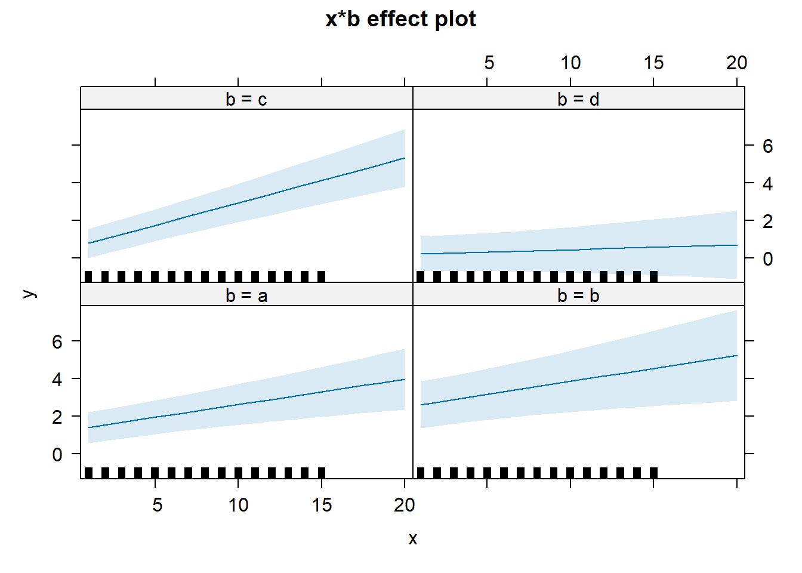

ss = 843912
ss = round(runif(1,1e3,1e6))
set.seed(ss)
n_groups = 168
npgroup = round(runif(368,2,11))
g = unlist(sapply(1:n_groups, function(x) rep(x,npgroup[x])))
N = length(g)
x = round(runif(N,1,15))
b = sample(letters[1:4],n_groups,T,prob=c(.3,.2,.3,.2))
b = b[g]
res = MASS::mvrnorm(n=n_groups,
mu=c(0,0),
Sigma=diag(c(3,2))%*%matrix(c(1,.4,.4,1),nrow=2)%*%diag(c(3,2)))
re0 = res[,1]
re = re0[g]
rex = res[,2]
re_x = rex[g]
lp = (0 + re) + (1.1 + re_x)*scale(x,center=F)[,1] +
1.4*(b=="a") +1.8*(b=="b") +
.8*(b=="c")*scale(x,center=F)[,1]+
-1.1*(b=="d")*scale(x,center=F)[,1]
y = lp + rnorm(N,0,1)
df = data.frame(x = x, g=factor(g), b=b,y=y)
library(lme4)
m1=lmer(y~1+x+(1+x|g),df)
m2=lmer(y~1+x+b+(1+x|g),df)
m3=lmer(y~1+x*b+(1+x|g),df)
any(!is.null(c(m1@optinfo$conv$lme4$messages,
m2@optinfo$conv$lme4$messages,
m3@optinfo$conv$lme4$messages)))[1] TRUEanova(m1,m2,m3)Data: df
Models:
m1: y ~ 1 + x + (1 + x | g)
m2: y ~ 1 + x + b + (1 + x | g)
m3: y ~ 1 + x * b + (1 + x | g)
npar AIC BIC logLik deviance Chisq Df Pr(>Chisq)
m1 6 4231.5 4261.6 -2109.7 4219.5
m2 9 4227.4 4272.7 -2104.7 4209.4 10.037 3 0.0182571 *
m3 12 4216.1 4276.4 -2096.0 4192.1 17.370 3 0.0005932 ***
---
Signif. codes: 0 '***' 0.001 '**' 0.01 '*' 0.05 '.' 0.1 ' ' 1plot(effects::effect("x*b",m3))
# library(lme4)
# m = glmer(solved ~ difficulty + status + (1+difficulty|monkeyID), monkeystatus, family=binomial)
# summary(m)
#
# m1=glmer(solved ~ difficulty + (1+difficulty|monkeyID), monkeystatus, family=binomial)
# anova(m1,m)
#
# lmer(probscore ~ 1 + difficulty + status +
# (1 + difficulty | monkeyID),
# data=monkeystatus) |> summary()